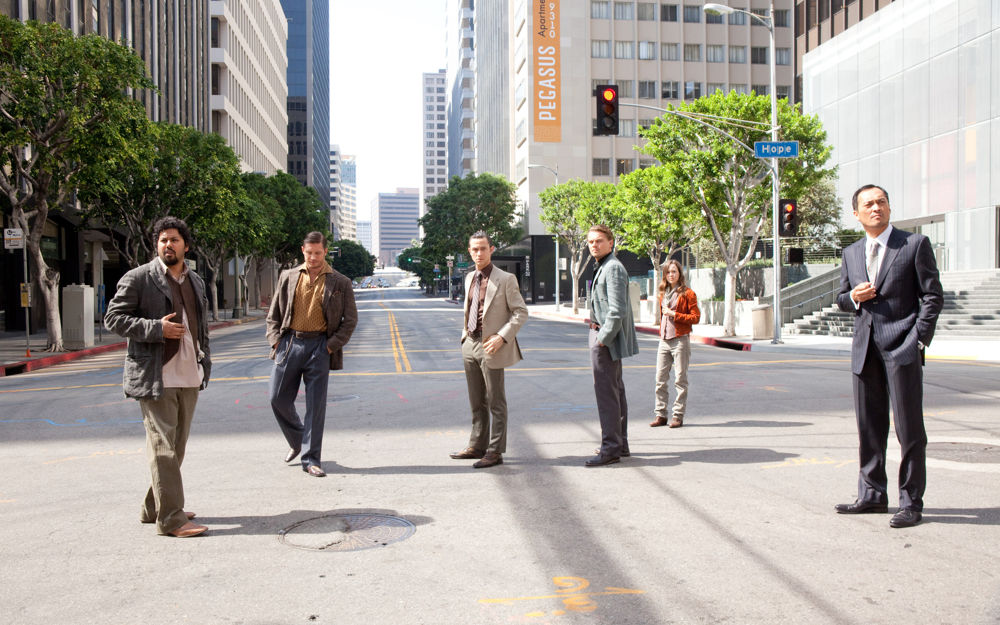
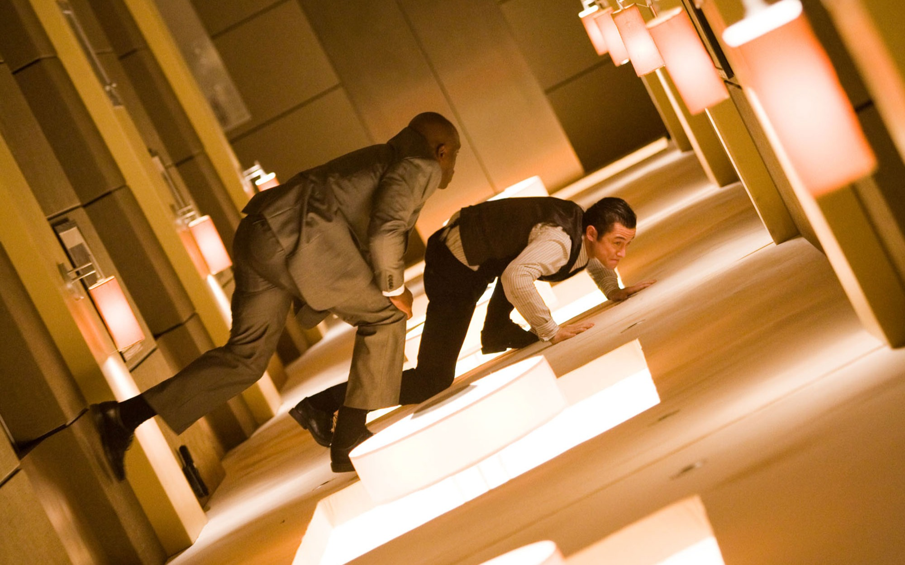
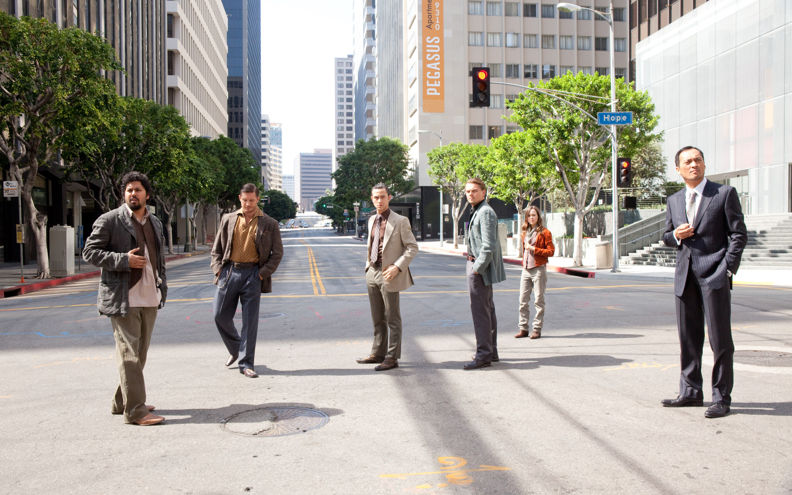
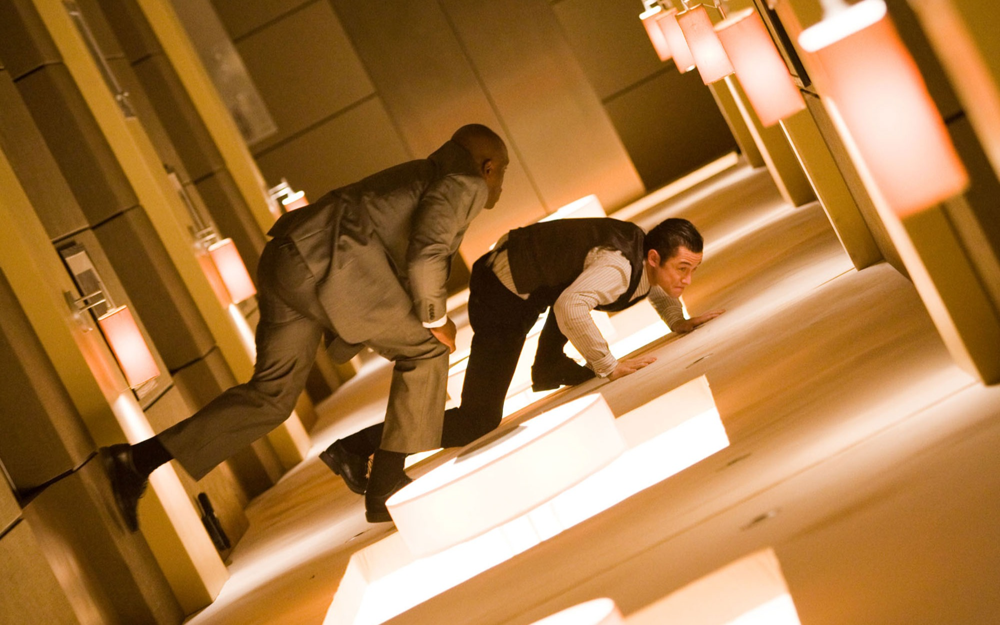

Inception Review
Christopher Nolan's Inception is a groundbreaking masterpiece that bends the boundaries of imagination, reality, and time. Released in 2010, this mind-bending sci-fi thriller takes audiences on an intricate journey through the subconscious, where dreams become landscapes to be explored, manipulated, and even weaponized. At its core, Inception is a heist movie—but instead of stealing money or jewels, the characters attempt to plant an idea deep within a target's mind, a concept known as "inception." With its layered storytelling, stunning visuals, and Hans Zimmer's iconic score, Inception is as much a cerebral puzzle as it is a cinematic spectacle. It challenges viewers to question the nature of reality, the fragility of memory, and the power of belief, all while delivering edge-of-your-seat thrills.
The Dream Team
The cast of Inception is nothing short of phenomenal, with Leonardo DiCaprio leading as Dom Cobb, a skilled extractor haunted by his past and desperate for redemption. DiCaprio’s performance masterfully conveys Cobb’s inner turmoil and emotional fragility, making his journey as gripping as the high-stakes missions he undertakes. Ellen Page delivers a standout performance as Ariadne, the brilliant and inquisitive architect who quickly becomes the moral compass of the team. Her curiosity and sharp intellect not only guide the audience through the labyrinthine concept of dream manipulation but also create a fresh and relatable dynamic with Cobb and the rest of the ensemble.
Tom Hardy’s charismatic portrayal of Eames, the charming forger, injects the film with humor and flair, stealing several scenes with his clever quips and effortless confidence. Meanwhile, Joseph Gordon-Levitt balances the energy perfectly with his portrayal of Arthur, the polished and methodical point man, whose iconic zero-gravity fight scene remains unforgettable. Marion Cotillard’s haunting turn as Mal, Cobb’s enigmatic and tragic late wife, brings an emotional intensity to the narrative that lingers long after the credits roll. Rounding out the team, Ken Watanabe’s calm and commanding Saito, Cillian Murphy’s layered portrayal of Robert Fischer, and Michael Caine’s warmth as Cobb’s father-in-law add further richness to an already exceptional ensemble. Together, this dream team elevates Inception into a cinematic masterpiece.
 



I’m a fan of the dream layers and the deeper meanings they reveal.
Inception isn’t just a sci-fi heist movie; it’s a layered exploration of the human subconscious and the complexity of our inner worlds. At its heart, the film is a deeply personal story of grief, guilt, and redemption, centered around Dom Cobb's desperate attempt to reunite with his children while grappling with the psychological burden of his wife Mal's death. Mal, a projection of Cobb’s guilt and unresolved trauma, manifests as a recurring antagonist in his dreams, symbolizing how our inner demons can sabotage even our noblest intentions.
The concept of dreams within dreams adds yet another layer of meaning. It’s a representation of how memories and thoughts can intertwine, creating realities that feel as real as waking life. Cobb’s emotional journey mirrors the way we wrestle with our own past mistakes and the ways we try to reconcile them. The dreams become a canvas for these struggles, and each layer adds a new dimension to the story: a thrilling heist on the surface, and a deep psychological battle underneath.
But perhaps the most thought-provoking aspect of Inception is its exploration of reality itself. What defines the boundary between the real and the imagined? Nolan deliberately blurs the line with the infamous spinning top scene, a symbol of uncertainty and perception. The unresolved ending leaves viewers questioning not just the outcome of the film, but their own interpretations of truth and illusion. It’s this ambiguity that has kept audiences engaged in endless debates, giving Inception an enduring legacy as both a mind-bending thriller and a deeply philosophical work.
I just wish the visuals and music didn’t steal the show.
The visuals in Inception are nothing short of groundbreaking, setting a new standard for what science fiction films can achieve. From the iconic Parisian streets folding onto themselves to the zero-gravity hallway fight scenes, Christopher Nolan takes full advantage of cinema’s ability to defy the laws of physics. These stunning visuals aren’t just for show—they immerse the audience in the surreal logic of dreams, where anything can happen, yet everything feels grounded. Wally Pfister’s cinematography captures this balance beautifully, ensuring that even the most mind-bending sequences retain a sense of realism and weight.
What makes the film’s visuals even more impressive is their practical execution. Many of the seemingly impossible effects, like the rotating hallway, were achieved using practical sets and minimal CGI, adding a tangible authenticity to the dream sequences. This dedication to craftsmanship gives Inception a timeless quality, where the visuals remain just as captivating more than a decade after its release.
Then there’s Hans Zimmer’s score, a masterpiece in its own right that elevates the film’s emotional and narrative stakes. The powerful, booming brass of Time has become synonymous with the film’s sense of urgency and scale, while the slow, stretched-out tones of Édith Piaf’s Non, Je Ne Regrette Rien serve as a haunting reminder of the layers of dreams collapsing in on themselves. Zimmer’s music doesn’t just accompany the story—it amplifies it, creating an atmosphere that is both mesmerizing and deeply unsettling. The interplay between the visuals and sound is seamless, pulling the audience deeper into the dreamworld Nolan has crafted.
Together, the visuals and score create a sensory experience unlike any other. Inception doesn’t just tell a story; it immerses you in it, bending your perception of reality and leaving you in awe of its ambition. It’s a film that demands to be experienced in every sense, making it one of the most unforgettable cinematic achievements of the 21st century.
Verdict
At its core, Inception is more than just a movie—it's an unforgettable experience. Christopher Nolan has masterfully crafted a film that blends high-concept storytelling, breathtaking visuals, and an emotional core that resonates long after the credits roll. The themes of loss, redemption, and the fragile line between dreams and reality strike a universal chord, making it a story that speaks to audiences across generations. It’s a film that demands your full attention, invites you to question your perceptions, and leaves you marveling at its intricacy.
While some may find the layered storytelling and ambiguous ending a little polarizing, that’s part of the magic of Inception. It’s a film that embraces complexity, refusing to spoon-feed its audience and instead trusting them to piece together the puzzle for themselves. This balance of intellectual challenge and emotional depth is what sets Inception apart from other sci-fi films. It’s not just about dreaming big; it’s about questioning the very fabric of our reality and finding meaning in the chaos.
Inception is a cinematic masterpiece that redefines what blockbuster films can achieve. It’s a rare blend of mind-bending visuals, emotional storytelling, and a haunting score that lingers with you long after the film ends. Whether you’re drawn to its complex narrative, stunning effects, or deeper philosophical questions, there’s something here for everyone. More than a decade later, it still feels fresh, thought-provoking, and endlessly rewatchable. Love it or hate it, one thing is certain: Inception is a film that will be discussed, debated, and celebrated for generations to come.